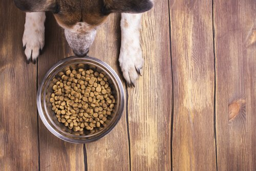

As melhores e mais queridas marcas de Ração para Cachorro!
Conheça as características e variedades oferecidas pelas principais marcas de ração do mercado!

Ração Gran Plus.
Ração Pedigree.
Ração Special Dog.
Ração Magnus.
Ração Fórmula Natural.
Ração Hills.
As melhores e mais queridas marcas de Ração para Gato!
Conheça as características e variedades oferecidas pelas principais marcas de ração do mercado!